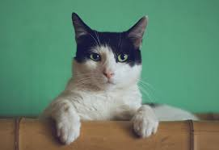
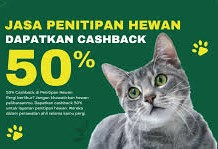
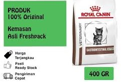
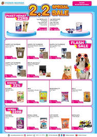

" Where Love for Animals Grows into Unforgettable Fun! :) "
About We Are
| Home | Shop | Pelayanan | About | Contact us |
|---|
|
|
" Where Love for Animals Grows into Unforgettable Fun! :) "
|
Hewan Peliharaan |
|
|---|---|
Anjing |
|

|
Anjing adalah mamalia domestik yang merupakan bagian integral dari kehidupan manusia selama ribuan tahun. Mereka dikenal karena loyalitasnya yang luar biasa terhadap manusia serta kecerdasan, kepekaan, dan beragam kegunaan mereka, mulai dari hewan peliharaan hingga pekerjaan dalam berbagai bidang seperti penjagaan, pencarian, dan bantuan. Anjing memiliki variasi ras yang luas dengan karakteristik fisik dan kepribadian yang berbeda-beda, dari yang kecil seperti Chihuahua hingga yang besar seperti Great Dane. Mereka adalah teman setia, mampu membentuk ikatan emosional yang kuat dengan pemiliknya, dan sering kali menjadi bagian tak terpisahkan dari banyak keluarga di seluruh dunia. |
Kucing |
|
|  |
Kucing adalah mamalia kecil berkaki empat yang sering dijadikan hewan peliharaan. Mereka memiliki bulu halus, taring tajam, dan indra penciuman yang peka. Kucing terkenal akan keanggunannya, kemampuan melompat tinggi, serta naluri berburunya yang kuat. Mereka dapat menjadi teman setia dan memiliki kecenderungan untuk bersifat independen. Kucing juga memiliki berbagai jenis ras dengan karakteristik dan warna bulu yang beragam. |
Promo Terbaik hari ini |
||
|---|---|---|
|  |  |  |